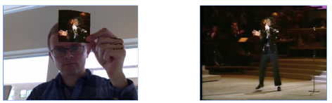

King of Pop
Why not combine the King of Pop with the King of Repositionable Notes: Post-it?
Your goal is to:
- Replace pixels matching the selected target color with pixels from the King of Pop's video
- Pause the video when the Post-it is not in the frame (too few matching pixels)
Error message
Target color:
The end result should look something like this:
